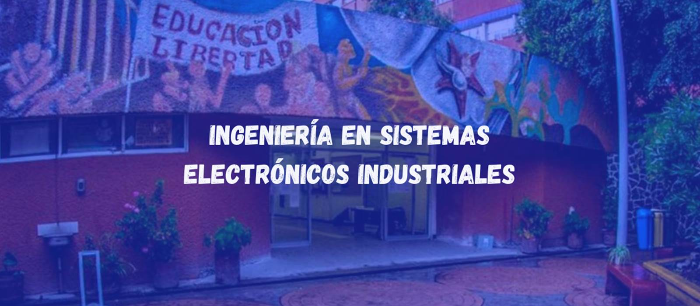

Ingenieria en Sistemas Electronicos Industriales
La Ingeniería en Sistemas Electrónicos Industriales forma profesionales capaces de diseñar, mantener y optimizar sistemas electrónicos aplicados a la industria moderna. Los egresados pueden trabajar en sectores como manufactura, energía, telecomunicaciones, y automatización.
Perfil de egreso
El egresado de esta carrera contará con los conocimientos y habilidades, en los aspectos técnicos, humanísticos y administrativos, tales que les permita, entre otras tareas: diseñar, realizar, supervisar y dar mantenimiento a sistemas electrónicos industriales.
- Tendrá un conocimiento profundo de las máquinas eléctricas de uso industrial.
- Podrá aplicar los controladores electrónicos de uso más común para el arranque y control de par de motores eléctricos.
- Capacidad de diseñar instalaciones eléctricas industriales siguiendo las normas nacionales para tal efecto.
- Capacidad de manejo de programas de diseño asistido por computadora para el análisis y diseño de sistemas de potencia eléctrica.
- Conocerá los conceptos y los problemas de la calidad de la energía y será capaz de recomendar soluciones para los diferentes problemas de calidad.
- Será capaz de resolver problemas de circuitos eléctricos en estado transitorio utilizando herramientas matemáticas y computacionales.
- Tendrá habilidad en el manejo de programas de análisis transitorio de sistemas eléctricos de potencia, tales como el EMTP y el ATP.